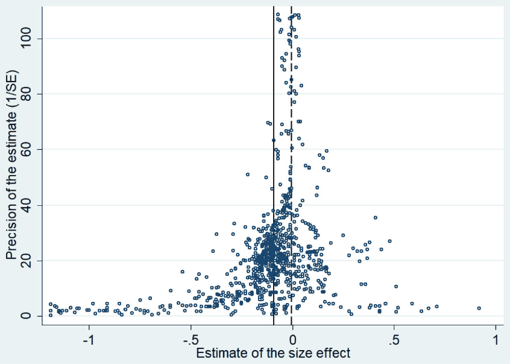

Firm Size and Stock Returns: A Quantitative Survey
Anton Astakhov, Tomas Havranek, and Jiri Novak (2019), "Firm Size and Stock Returns: A Quantitative Survey." Journal of Economic Surveys 33(5), 1463-1492. https://doi.org/10.1111/joes.12335.
Anton Astakhov, Tomas Havranek* and Jiri Novak
Charles University, Faculty of Social Sciences, Institute of Economic Studies
*Corresponding author contact email: tomas.havranek@ies-prague.org; Tel: +420777892867.
The data and codes used in this study are available in an online appendix at http://meta-analysis.cz/size.
Abstract
Abstract. Firm size is commonly used in numerous empirical asset pricing models as a determinant of expected stock returns. Yet there is little consensus over the magnitude and stability of the size premium. In fact, some researchers even question whether firm size should be used as a pricing factor. We collect 1746 estimates of the slope coefficients capturing the association between firm size and stock returns reported in 102 published studies and conduct the first meta-analysis on the size premium. We find evidence of a strong bias toward publishing statistically significant negative slope coefficients. After correcting for the bias, we find that the literature implies a difference in annual stock returns on the smallest and the largest New York Stock Exchange (NYSE) market capitalization quintiles of 1.72%. For the time periods covered in the sampled articles, we find that the size premium was larger in earlier years and that the intensity of publication bias has been decreasing over time.
Keywords: Asset pricing; Multifactor models; Publication selection bias; Risk; Size premium; Stock returns
1. Introduction
The identification of factors explaining variation in stock returns and estimating the magnitude of the corresponding premiums is a fundamental research agenda in asset pricing. It is commonly assumed that on the margin, investors are risk-averse and set asset prices so that the implied expected returns provide a fair compensation for their systematic risk. The Capital Asset Pricing Model (CAPM; Sharpe, 1964; Lintner, 1965; Black, 1972) postulates that an asset’s systematic risk depends on its contribution to the volatility of returns on the market portfolio. The model predicts a positive linear association between an asset’s expected return and its systematic risk defined as the sensitivity of the asset’s returns to the variation in market returns. CAPM also suggests that the market beta is a comprehensive measure of an asset’s systematic risk, and so no other factor should be relevant for explaining variation in stock returns.
Contrary to this prediction, empirical research identifies numerous firm characteristics associated with realized stock returns: for example, firm size (Banz, 1981; Reinganum, 1981; Keim, 1983), financial leverage (Bhandari, 1988), earnings-to-price ratio (Reinganum, 1981; Basu, 1983), book-to-market equity ratio (B/M; Fama and French, 1992, 1996; Lakonishok et al., 1994), and stock price momentum (Jegadeesh and Titman, 1993, 2001; Carhart, 1997). These findings suggest that systematic risk may be a more elusive concept than envisaged by the CAPM. Risk can plausibly be multidimensional, and the above variables may predict stock returns because they capture a firm’s exposure to various underlying risk dimensions that are disregarded in the CAPM framework, such as the bankruptcy, liquidity, and information risks.
We perform a meta-analysis of published studies on the association between firm size and realized stock returns. Firm size is one of the first empirically documented firm characteristics associated with realized stock returns (Banz, 1981; Reinganum, 1981; Keim, 1983). Fama and French (1992) consider the size effect “the most prominent” empirical contradiction to the CAPM. Firm size is used as a factor in all major empirical asset pricing models, that is, the three-factor model (Fama and French, 1993), the four-factor model (Carhart, 1997), and the five-factor model (Fama and French, 2015). Indeed, Chen et al. (1986) argue that “size may be the best theory we now have of expected returns” (p. 394).
Despite its widespread use as a pricing factor, firm size exhibits several puzzling features that are difficult to reconcile with the notion of a risk proxy. The size premium (i.e. the difference between average stock returns earned on small and large stocks) is not consistent across regions (Hou et al., 2011; Cakici et al., 2016) and across time (Horowitz et al., 2000b; van Dijk, 2011). It is concentrated in the month of January (Keim, 1983) and in the very smallest stocks (Banz, 1981; Knez and Ready, 1997). Contrary to the prediction that risky assets yield low returns in times of economic declines, the size premium is larger in “bear” markets than in “bull” markets (Hur et al., 2014). Furthermore, it is not obvious why large stocks should be considered less risky while stocks that have recently grown in terms of their market capitalization, that is, stocks with a positive stock price momentum, shall be more risky (Carhart, 1997; Conrad and Kaul, 1998; Chordia and Shivakumar, 2002).
These puzzling findings fuel the controversy over whether size indeed proxies for a firm’s exposure to underlying risk or whether the findings on its predictive power reflect (i) its correlation with costly imperfections in the stock market microstructure, (ii) its ability to proxy for systematic mispricing that is followed by a stock price correction, or (iii) incorrect statistical inferences based on nonrepresentative samples, inappropriate methodology, or other sources of bias (van Dijk, 2011). Discriminating among these alternative explanations has profound implications for the interpretation of the empirical findings. Thus, it is important to systematically study the evidence on the association between firm size and stock returns and to evaluate its strength and consistency.
Unsurprisingly, prior research has amassed an extensive body of empirical evidence on the explanatory power of firm size in various settings (for an overview, see Harvey et al., 2016). Performing a meta-analysis allows us to systematically aggregate and synthesize past findings, to evaluate the strength of the association between firm size and stock returns, and to assess its stability over time. Furthermore, this methodological approach allows us to adjust for a potential publication selection bias among the reported estimates and to estimate the magnitude of the size premium avoiding the criticized presorting of stocks into portfolios based on previously empirically documented characteristics. Our study is thus relevant both for the development of finance theory that aims at explaining the existence of empirical pricing factors, as well as for practical finance application, including the estimation of the cost of capital and the performance evaluation of investment strategies.
We document significant publication selection bias in the existing literature. In line with prior literature, we define the size premium as difference in stock returns on the smallest and largest market capitalization portfolios of stocks traded on the New York Stock Exchange (NYSE), NYSE-MKT (formerly AMEX), and NASDAQ using NYSE breakpoints published on Kenneth French’s website.1 After adjusting for the effect of publication selection, we estimate the size premium to be 1.72%. We assume a linear relationship between firm size and stock returns, which implies that our size premium estimate is applicable for firms of sizes comparable with the NYSE market capitalization quintiles and it is not necessarily generalizable to micro stocks at the bottom or below the smallest NYSE quintile. In addition, as most of the studies that constitute our sample are based on the U.S. stock market data, our size premium estimate applies to comparable markets characterized by an effective institutional regulatory framework and high liquidity. We observe a large regional variation in the reported slope coefficients that suggest that the premium is likely larger in less well-regulated markets. Furthermore, we observe larger coefficients in the month of January and slightly larger coefficients in studies that do not control for the market beta. Surprisingly, the quality of the journal does not seem to affect the magnitude of the publication bias.
We also find that the size premium was larger prior to the publication of the first study on the topic and that newer studies are less affected by selective publication. A possible explanation for the decrease in the publication bias over time might be the growing prevalence of the view that the magnitude of the size premium decreased after the effect was first identified by Banz (1981). We show a drop of approximately 50% in the estimated magnitude of the size premium in studies conducted on observations past 1981 compared to studies conducted on observations from earlier years. The growing acceptance of the smaller size premium makes it easier for newer studies to report nonsignificant or positive slope coefficients. Nevertheless, we acknowledge that our analysis is constrained by the sample periods covered in the articles that we include in our study and that our approach allows us to detect potential recent shifts in the size premium only after the new data are included in samples of newly published academic studies. Future research is needed to analyze whether the decline in the size premium after 1980s has been recently reversed.
The remainder of the paper is organized as follows. Section 2 reviews the related literature, Section 3 discusses methodology and data, Section 4 presents the empirical results, and Section 5 concludes the paper. Appendix A lists the studies included in the meta-analysis; Appendix B presents additional results to our examination of the mediating factors of publication bias; and Appendix C shows the results after including data from unpublished papers.
2. Related Literature
The negative association between firm size (i.e. its market capitalization) and realized stock returns was first documented in the early 1980s (Banz, 1981; Reinganum, 1981; Keim, 1983). The size effect, that is, the tendency of small firms’ stocks to earn higher returns than large firms’ stocks, was puzzling because the relationship had not been envisaged by asset pricing theory, such as the CAPM. The anomalous nature of this finding motivated extensive follow-up empirical research aimed at analyzing the size effect in various contexts. This stream of research documented the size premium in various markets and time periods. The fairly high consistency of these findings suggested that the premium reflects a fundamental phenomenon, which prompted theoretical research aimed at providing conceptual explanations for its existence.
Finance literature proposes a number of potential explanations for the size effect. Banz (1981) acknowledges that there are no theoretical foundations for the size effect he documents but he offers several conjectures consistent with the observed empirical pattern. Referring to the Klein and Bawa’s (1977) model which shows that due to the estimation risk investors may be reluctant to invest in securities with limited available information, Banz (1981) proposes that the higher realized returns of small stocks may reflect a compensation for their higher information risk due to the lower quality of information disclosures provided by small firms.
Another commonly proposed explanation is based on the idea that small firms have a greater risk of financial distress (Chan and Chen, 1991; Fama and French, 1992, 1993, 1995, 1996; Chen and Zhang, 1998; Vassalou and Xing, 2004). The CAPM framework assumes away the cost of bankruptcy and financial distress. However, these costs can be significant especially for firms rich in intangible assets that cannot be easily transferred to new owners. Low market capitalization (i.e. small firm size) may result from a recent decrease in a firm’s stock price that may be motivated by investors’ concerns about the firm’s financial viability. Hence, the higher realized returns on small firms may compensate investors for the higher expected distress risk for firms in financial difficulty. Consistent with this proposition, Vassalou and Xing (2004) show that the size effect is only significant in the quintile of stocks with the highest default risk, and Hwang et al. (2010) find that the size effect can be explained by the excess credit spread on a firm’s bonds that can be seen as a proxy for a firm’s default risk. In contrast, Dichev (1998) finds that contrary to the expectations firms with high bankruptcy risk earn lower stock returns, which casts doubt on the distress risk explanation.
Furthermore, the size premium may represent a compensation for market imperfections that impair liquidity of small stocks to a greater degree than large stocks (Amihud and Mendelson, 1986; Datar et al., 1998; Amihud, 2002; Pástor and Stambaugh, 2003; Acharya and Pedersen, 2005; Liu, 2006). Liquidity of a stock is typically defined as its ability to be readily converted into cash at low cost (Liu, 2006). Relative trading costs are likely larger for small stocks than for large stocks due to both the wider relative bid–ask spreads and the greater impact that a transaction of a given magnitude has on the stock price. The liquidity considerations may be particularly pressing for large institutional investors who trade large volumes of stocks and who may therefore be prone to avoid investment in small stocks. If large investors shy away from small stocks they constrain the demand, which ultimately depresses their price to the point where the higher expected return provides a fair compensation to the investors for the lower liquidity of small stocks.
The pervasiveness of the empirical evidence on the size effect together with the plausibility of the proposed theoretical explanations has gradually established firm size as a pricing factor featured in several empirical asset pricing models, for example, the three-factor model (Fama and French, 1993), the four-factor model (Carhart, 1997), and the five-factor model (Fama and French, 2015) that are a de facto industry standard for estimating expected stock returns. Nevertheless, firm size was not ex ante envisaged as a pricing factor in asset pricing theory. Instead, the conceptual arguments of why it proxies for risk were provided only ex post when its predictive power was documented empirically. Consequently, there is still a controversy over whether the empirical findings should be interpreted as evidence on the ability of firm size to capture underlying risk characteristics. Horowitz et al. (2000a) argue that “despite the widespread use of size, the empirical basis for this practice is questionable” (p. 84).
The size premium exhibits several puzzling characteristics that fuel this skepticism. First, empirical research suggests that the size premium significantly varies across regions and for some regions the predictive power of firm size is overshadowed by other pricing factor candidates. Hou et al. (2011) investigate stock returns in 49 economies, they reject the covariance risk model of firm size and conclude that the stock price momentum and the ratio of cash flow-to-price best capture the variation in stock returns. Cakici et al. (2016) examine the pricing factors in 18 emerging stock markets and conclude that both firm size and stock price momentum fail to reliably predict future stock returns. These findings are problematic because if firm size proxies for underlying risk, it should be systematically associated with stock returns across various contexts.
Second, some studies suggest that the size premium disappeared after the 1980s and then resurfaced after 2000 (Dichev, 1998; Horowitz et al., 2000b; van Dijk, 2011). This finding also constitutes a challenge to the interpretation of firm size as a risk proxy as these should be relatively stable over time. Researchers disagree over how these empirical findings should be interpreted. For example, Horowitz et al. (2000a) consider the disappearing size effect as evidence inconsistent with the proposition that firm size captures a hidden risk dimension. In contrast, Hou and van Dijk (2014) suggest that the disappearance of the size effect from realized stock returns does not necessarily imply a change in expected returns. They document that small (large) firms experienced negative (positive) profitability shocks after the early 1980s that affected realized stock returns. However, after adjusting for the effect of these profitability shocks the difference in expected return on small and large stocks (i.e. the expected size premium) persists.
Third, the size premium is concentrated in the month of January (Keim, 1983). Considering firm size as a risk proxy it is not trivial to explain why small stocks are systematically riskier in January while they are no more risky than other stocks in the remaining months of the year. Fourth, the size premium is positive when there is a general tendency of stock prices to decrease (i.e. in the “down markets” or the “bear markets”), whereas it is close to zero when the stock prices have a tendency to rise (i.e. in the “up markets” or the “bull markets”; Hur et al., 2014). This seems to contrast the notion of systematic risk, which predicts low returns on riskier assets in times of economic downturn when scarcity of income increases.
Fifth, the premium is concentrated in the smallest stocks (Banz, 1981). Knez and Ready (1997) argue that the size effect is driven by the extreme 1% of the observations; when these are eliminated, the negative association between firm size and realized returns reverses. The nonlinearity begs an explanation of why the smallest stocks are riskier than the remaining stocks while at the same time within the remaining stocks, larger stocks are riskier than medium-sized stocks. Sixth, the risk-based explanation of the firm size does not seem to be entirely compatible with another commonly proposed risk proxy the stock price “momentum” (Carhart, 1997; Conrad and Kaul, 1998; Chordia and Shivakumar, 2002). Firm size is typically operationalized as a natural logarithm of a firm’s market capitalization. Momentum tends to be measured as the past 6-month dividend-adjusted stock return and so a positive stock price momentum implies an increase in firm size. It is challenging to reconcile the notion of small stocks being riskier while at the same time stock that have recently became smaller (i.e. stocks with a negative stock price momentum) are less risky.
These puzzling findings challenge the role of firm size as a risk proxy and cast doubt on its use as a pricing factor. Despite of the ex post rationalizations of what risk dimensions firm size captures, it is conceivable that the reported associations are spurious and they result from flawed methodologies, data mining, extreme observations, or other sources of bias. For example, Lo and MacKinlay (1990), MacKinlay (1995), and Berk (2000) argue that when stocks are sorted into portfolios based on previously empirically documented characteristics, conventional tests may overstate the statistical significance of the association between firm characteristics and stock returns. Due to the extensive use of firm size as a risk factor in the empirical asset pricing models, it is important to investigate the impact these biases may have on the magnitude of the estimated coefficients. To that end, we systematically analyze findings on the association between firm size and stock returns reported in prior literature and provide new insights on the validity of firm size as a risk proxy and on the magnitude of the size premium.
3. Research Design
3.1 Methodology
In asset pricing, firm size is traditionally measured as a firm’s market value of equity computed as the firm’s stock price times the number of shares outstanding. The measure is bounded at zero and it is right-skewed and so it is common to log-transform it to get values of firm size that are closer to a normal distribution. The size effect has traditionally been estimated using two main approaches (Fama and French, 2008; Crain, 2011). The first approach uses the raw firm size as the explanatory variable for the cross-sectional variation in stock returns (e.g. Fama and French, 1992). Testing the relationship between firm size and stock returns is subject to several econometric challenges. While long-run variation in stock returns is plausibly driven by the differences in individual firms’ fundamentals (i.e. a firm’s systematic risk), in a short-run realized stock returns are rather volatile.
The noise caused by stock price oscillation around the intrinsic value entails large standard deviations of estimated coefficients, which makes it hard to empirically discern any relationship between stock returns and fundamentals (Merton, 1980). In addition, some of the explanatory variables, namely, the market beta of the CAPM, are not observable, they must be estimated and so their measurement is contaminated with an estimation error that may be correlated with the error term of the cross-sectional regression and so it may bias the estimated slope coefficients (Blume, 1970).
To address these issues, the cross-sectional regressions are typically run separately for every month, and the time-series mean and variance in the estimated monthly slope coefficients are then used to compute the test statistics (Fama and MacBeth, 1973, henceforth, the FM regressions). In addition, to amplify the signal-to-noise ratio some researchers presort stocks into portfolios based on the explanatory variables and they use in the subsequent empirical tests the returns of the portfolios rather than of the individual stocks. Grouping stocks into portfolios washes away some of the idiosyncratic variation in individual stocks’ returns, which increases the power of the empirical tests. At the same time, however, it reduces the number of observations and it may potentially eliminate some of the legitimate variation in stock returns driven by a firm’s fundamentals.
The explanatory power of individual variables is tested in several steps. First, the unobservable variables, such as the market , are estimated in time series for the individual firms using Equation (1).
where is return on stock in period , is return on market portfolio in period , is estimated beta of stock , and is random error term.
Subsequently, the market beta estimated using Equation (1) is used together with additional explanatory variables (including firm size) as right-hand-side variables in the monthly cross-section regressions following Equation (2).
where is beta estimated from (1) and is vector of additional explanatory variables (including size).
The second approach assumes that firm characteristics such as firm size proxy for hidden risk dimensions and suggests that stock returns are determined by a firm’s exposure to the variation in risk premiums associated with these characteristics (Fama and French, 1993). This approach requires a construction of mimicking portfolios representing the underlying pricing factors. The small-minus-big (SMB) factor that is based on firm size is defined as the difference in average monthly stock returns on a group (typically a quintile) of the smallest stocks less the equivalent stock returns on a group of the largest stocks. To capture individual firms’ exposure to the SMB factor their monthly stock returns are regressed on the time series of the SMB monthly premiums and the factor loadings of individual firms are approximated by the slope coefficients from these time-series regressions. The factor loadings are subsequently used as explanatory variables in monthly cross-sectional Fama–MacBeth (1973) regressions that test whether the differences in individual firms’ sensitivities to the pricing factor explain the cross-section of stock returns.
Another way to estimate the size effect employed, for example, in Easterday et al. (2009), Horowitz et al. (2000b), and others, is to presort stocks into portfolios based on individual firm characteristics, such as size, B/M, beta, momentum, and liquidity, and directly compares the returns of the smallest and the largest quintiles of stocks. Fama and French (2008) provide a discussion of the pros and cons of portfolio sorting and regression methods.
In this paper, we consider studies that follow the former approach which estimates the size effect by regressing stock returns on the natural logarithm of market value of equity or on other proxies for firm size.2 While most studies use the cross-sectional FM regressions (a recent overview of such studies is available in Harvey et al., 2016) we do not restrict our sample to studies that employ this technique, but instead we include results from research articles reporting any form of a regression of stock returns on firm size.
We have several reasons for analyzing the studies that use firm size rather than the sensitivity to the SMB factor. First, the latter approach that estimates the sensitivity to the SMB factor implicitly assumes that used firm characteristics are valid proxies for hidden risk dimensions. In contrast, the former approach is more fundamental as it views the validity of firm characteristics as risk proxies as an open question. Second, most studies using the latter approach use mimicking portfolio returns published on Kenneth French’s website, which makes the studies more dependent and thereby less suitable for a meta-analysis.
Third, the latter approach extensively relies on sorting stocks into portfolios and the estimated mean portfolio returns are sometimes reported without the corresponding t-statistics (or standard errors) that we require for a meta-analysis. Fourth, while the use of portfolios is understandable due to the noisy stock returns (see above) it comes at a cost of (i) eliminating a great deal of variation in the data much of which may be driven by fundamentals, and (ii) severely limiting the number of explanatory variables that constitute the dimensions of the sort. Thus sorting to portfolios has been extensively criticized (Lo and MacKinlay 1990; Berk, 2000; Fama and French, 2008; van Dijk, 2011). Fama and French (2008) provide an argument against using sorts for making inferences about the marginal effects of individual stock return determinants:
. . . sorts are awkward for drawing inferences about which anomaly variables have unique information about average returns. Multiple regression slopes provide direct estimates of marginal effects. Moreover, with our large samples, marginal effects are measured precisely for many explanatory variables. Second, sorts are clumsy for examining the functional form of the relation between average returns and an anomaly variable. In contrast, simple diagnostics on the regression residuals allow us to judge whether the relations between anomaly variables and average returns implied by the regression slopes show up across the full ranges of the variables. (p. 1654)
We collect point estimates and standard errors from the studies that satisfy the criteria described above to test for the selective reporting bias. Many authors recognize this bias as a serious issue in economics research (Ashenfelter and Greenstone, 2004; Stanley, 2005; Havranek, 2015; Havranek and Kokes, 2015; Havranek et al., 2018a, 2018b, 2018c) that arises from researchers’ tendency to primarily report the estimates that display the sign predicted by the theory and consistent with prior studies, along with those that are statistically significant.
Our empirical test of publication selection bias exploits the association between the estimated slope coefficient and its standard error. Absent a publication bias, coefficient from Equation (3) is expected to be equal to zero because the ratio of the reported estimate to its standard error follows the t-distribution. In contrast, if researchers are prone to report statistically significant negative estimates and to discard positive or insignificant estimates, large negative point estimates are more likely to be reported together with large standard errors, which motivates the prediction for the coefficient in regression (3) will be negative. A test of the hypothesis is known as the funnel-asymmetry test because it can also be examined visually by evaluating the symmetry of the corresponding scatterplot (Stanley, 2005; Feld and Heckemeyer, 2011; Feld et al., 2013; see also the useful guidelines by Stanley et al., 2013). Coefficient from Equation (3) represents the underlying mean effect corrected for the reporting bias:
where is th estimate of size effect (that is, coefficient from regression (2)) reported in study .
We estimate Equation (3) using several approaches. First, we use the ordinary least squares (OLS) with standard errors clustered at the level of individual studies and geographical regions. Second, we run a panel data regression using both study-fixed effects and between effects. In addition, we follow Stanley (2005, 2008) by estimating regression (3) using weighted least squares (WLS) to give more weight to more precise studies and to directly address heteroskedasticity. In this specification, the regression takes the form of Equation (4), with weights based on variable , which we call precision. In addition, following Irsova and Havranek (2013) and Havranek et al. (2015), we run specification (4) using the inverse of the number of size effect estimates reported per study as a weight (some studies report many more estimates than other studies). The weighted regression becomes
In Equation (4), the dependent variable is essentially the reported t-statistic, and measures the selective reporting bias. In the extreme case of a very strong selective reporting bias, the coefficient will approach , the most commonly used threshold for statistical significance. This would mean that the true size effect is zero, but because of the selective reporting bias, only negative and statistically significant estimates (at the 5% level) are reported in the literature.
We acknowledge that some omitted study characteristics, such as the use of various estimation techniques, can affect both the estimates of slope coefficients and their standard errors. To address this endogeneity concern, we estimate Equation (4) using the instrumental variable regression technique. The number of observations used for estimating a particular coefficient is by definition correlated with the reported standard error but it is plausibly independent of the choice of the estimation technique. We use the reciprocal of the square root of the number of observations (Stanley, 2005; Zigraiova and Havranek, 2016; Havranek and Irsova, 2017; Hampl and Havranek, 2019) as an instrument.
Next, we partition our sample using measures that we expect to affect the publication selection bias. We include in specification (3) interaction terms of the standard error with the recursive impact factor of the journal where the article containing the estimate is published (as reported on the IDEAS/RePEc website3) and with the year of its publication. The direction of the effect of journal quality on the strength of publication selection bias is not obvious. On the one hand, higher-quality journals employ more stringent review procedures, decreasing the likelihood of publishing studies with heavy data mining and backfitting of the results. On the other hand, researchers submitting studies to high-quality journals may feel obliged to omit inconclusive or contraintuitive findings that would render the empirical support of their paper less convincing and compromise the odds of being accepted for publication. Similarly, it is not clear how the year of publication should affect the selective reporting bias. On the one hand, recent studies employ more sophisticated econometric techniques, building on advances in the state-of-art methodology, which should bring to the estimated effect closer to the true effect. On the other hand, more recent research may have a greater tendency to report results consistent with the larger pool of already published findings.
As an additional test of selective reporting, we employ Hedges' (1992) model for detecting the publication selection bias. It models the selection process using a weight function, which is in turn approximated by a step function with discontinuities resembling the psychological "barriers" associated with interpretation of different p-values. Hedges (1992) refers to the findings of psychological studies on the interpretation of research results showing that conclusiveness of the results is strongly associated with the p-value. Moreover, this perception is distorted in such a way that perceived conclusiveness changes drastically near the conventionally used p-values of 0.1, 0.05, and 0.01; that is, the result with a p-value of 0.045 is perceived as much more conclusive than the result with a p-value of 0.055. Hedges (1992) uses these findings to develop a model in which the probability of selection (which in our case represents the publication of a study) is a function of p-value, and the above-mentioned discontinuities are incorporated into the step function. That is, the probability of selection changes when p-value approaches a psychological barrier (e.g. 0.1, 0.05, or 0.01).
3.2 Data Sample
To collect our sample of the published estimates, we first perform a Google Scholar search using keywords "(size OR small) AROUND(4) (effect OR premium OR anomaly OR pattern OR puzzle)" size small stock firm returns risk empirical regression portfolio sort effect premium "market value" OR "market capitalization." We consider the first 500 results provided by Google Scholar sorted by relevance. We only consider studies published in peer-reviewed journals that have passed the quality control mechanism of the review process. Rusnak et al. (2013) find no difference in the extent of selective reporting between published and unpublished studies in economics and argue that because the authors' ultimate aim is to publish their papers in research journals the incentives discard nonintuitive findings applies equally to published and nonpublished research. (A similar approach is employed by Havranek and Rusnak, 2013 and Havranek and Sokolova, 2019.) We then "snowball" our sample by considering all the references (i) from the 10 most-cited papers collected via Google Scholar search, and (ii) from the prominent review papers (Horowitz et al., 2000a; Crain, 2011; Hou et al., 2011; van Dijk, 2011; Harvey et al., 2016).
| Mean | St. dev. | Min | Max | |
|---|---|---|---|---|
| Size coefficient | −0.092 | 0.482 | −5.94 | 4.69 |
| t-Statistic | −1.246 | 2.956 | −16.84 | 26.18 |
| SE | 0.109 | 0.339 | 0.00 | 4.86 |
| 0.077 | 0.039 | 0.03 | 0.30 | |
| Start Year | 1965.783 | 95.542 | 0.00 | 2002.00 |
| End Year | 1989.253 | 96.053 | 0.00 | 2011.00 |
| No. of observations | 265.704 | 174.833 | 11.00 | 905.00 |
| Publication Year | 2000.549 | 7.479 | 1981.00 | 2014.00 |
| N | 1746 |
We start our sample period in 1981, which is the year of Banz's (1981) initial study on size effect, and terminate our search on March 31, 2017. To be included in the data set, a study must provide a point estimate and t-statistic or a standard error of the regression of returns on a natural logarithm of the market value of equity. Even though most of the studies we source our estimates from use the FM approach, we do not restrict our data set to this specific methodology. We collect all estimates reported in the studies that meet our search criteria. The resulting data set contains 1746 estimates from 102 papers, which puts this study among the largest meta-analyses conducted in economics and finance (for statistics, see Doucouliagos and Stanley, 2013). A list of studies selected for meta-analysis is provided in Appendix A. Our data and code are available at meta-analysis.cz/size.
We report summary statistics of our data set in Table 1. The mean reported estimate of coefficient from regression (2) is −0.092, which is consistent with the conventional notion that small stocks tend to outperform large stocks.
Table 2 shows basic data partitions. The estimates that we analyze exhibit significant heterogeneity in terms of the methodology employed, geographical region and time period covered. The mean estimate of the size effect differs depending on the time period and the region. In the table, we only show estimates that use data solely from the time period mentioned on the left: for example, there are 16 estimates that only use data after 2000 and no older data. The size effect is less prominent after 1981, the year in which the first study on this topic was published, which is consistent with the evidence from van Dijk (2011) and Horowitz et al. (2000a). In addition, the size effect is somewhat less pronounced in the USA than in other regions used in the data sample. Consistent with Keim (1983), the size effect is concentrated in the month of January. Finally, estimation techniques that are more advanced than OLS tend to yield a size effect of a smaller magnitude.
To alleviate the influence of extreme observations of the size effect, the data set is winsorized at the 2.5% level, an approach that has become relatively common in meta-analysis (see, for example, Havranek et al., 2017; Hampl et al., 2019). Apart from the size effect estimate, winsorization is also performed with respect to variables such as precision and the reciprocal of the square root of the number of observations.
It should be noted that during the data collection, we have encountered several difficulties caused by an ambiguous or incomplete description of the methodology in the studies. These include four issues:
1. Different measures of size and return. In some cases, size was measured relative to local, industry, or time-series average. Returns used in the data set can be simple, in excess of risk-free rate or adjusted using some sort of asset pricing models; in addition, the time frame over which returns were measured varies greatly from study to study, including such cases as 1-year-ahead monthly returns (Dichev, 1998) or 48-month buy-and-hold returns (Dissanaike, 2002).
| N | Mean | St. dev. | Min | Max | |
|---|---|---|---|---|---|
| Year of observations | |||||
| Before 1981 | 134 | −0.230 | 0.489 | −2.24 | 0.03 |
| 1981–2000 | 276 | −0.099 | 0.322 | −1.84 | 0.92 |
| After 1981 | 352 | −0.124 | 0.358 | −1.84 | 0.92 |
| After 2000 | 16 | −0.079 | 0.104 | −0.27 | 0.00 |
| Geographical region | |||||
| North America | 1109 | −0.079 | 0.475 | −3.60 | 4.45 |
| Europe | 165 | −0.139 | 0.685 | −3.24 | 4.69 |
| Other | 458 | −0.106 | 0.411 | −5.94 | 0.92 |
| Stock exchange (USA) | |||||
| NYSE only | 305 | −0.031 | 0.123 | −1.19 | 0.21 |
| Any | 784 | −0.100 | 0.558 | −3.60 | 4.45 |
| Month of returns | |||||
| January | 113 | −0.481 | 0.851 | −5.94 | 0.92 |
| Non-January | 1633 | −0.043 | 0.236 | −1.80 | 0.52 |
| Estimation technique | |||||
| OLS | 928 | −0.114 | 0.543 | −5.94 | 4.69 |
| Other | 818 | −0.068 | 0.400 | −3.60 | 1.48 |
| Stock returns | |||||
| Individual stock returns | 1072 | −0.109 | 0.524 | −3.60 | 4.69 |
| Returns on presorted stock portfolios | 628 | −0.084 | 0.388 | −5.94 | 3.20 |
| All Estimates | 1746 | −0.09 | 0.48 | −5.9 | 5 |
2. Different measures of variability. Different authors use different adjustments of standard errors and t-statistic to account for autocorrelation (Asparouhova et al., 2013), measurement errors (Fletcher, 1997), and heteroskedasticity (Chen et al., 2002), etc.
3. Insufficient reporting. During the data collection, we encountered numerous cases in which certain data set adjustments and regression outputs were not reported in a sufficiently clear manner (e.g. in some cases number of firm-level observations, scale of size variable, precise definitions of risk-free rate, or portfolio sorting techniques could not be retrieved). We did our best to obtain the information required from the authors; we generally avoided dropping studies from the sample unless critical information was missing.
4. Errors and omissions in reporting. In certain cases, we encountered mistakes such as negative standard errors, standard errors apparently reported as t-statistics (and vice versa), nonmatching signs of estimates and t-statistics. In addition, because of a (usually) small scale of the size coefficient, in a few cases standard errors were reported as zeros because of rounding. Here, we assumed conservatively that the standard error was the largest possible to be still rounded at zero.
Despite the issues described above, the initial results in Tables 1 and 2 indicate not only strong evidence of the negative size effect as reported in the literature, but also its clear heterogeneity. We further investigate the issue of the underlying size effect in the following section, especially in relation to publication selection bias.

Notes: The solid vertical line displays the sample mean; the dashed vertical line displays the sample median. Because of the presence of extreme observations for both size and precision, both variables are trimmed for better visibility.
4. Results
The funnel plot shown in Figure 1 visualizes the effect of potential selective reporting using the method suggested by Egger et al. (1997). The funnel plot depicts the precision of the estimates of the size coefficient on the y-axis and the point estimates of the size coefficient on the x-axis. In the absence of a selective reporting bias, the graph should take a symmetrical funnel shape, with the most precise estimates concentrated around the underlying mean value of the size effect, whereas less precise estimates would be dispersed around the mean. Using our data on size premium, we find the plot to be asymmetric and the individual point estimates to be concentrated in the left-hand tail. Therefore, it seems that positive estimates are less likely to be reported in published academic studies and if they are reported their precision tends to be fairly low (or equivalently, their standard errors tend to be large). The pattern in Figure 1 is thus consistent with selectivity in reporting the slope coefficient estimates.
To formally test for publication bias, we run regressions following the specifications described in Section 3. The results from this estimation are reported in Table 3. Column (1) presents the baseline OLS result of regressing the estimated slope coefficients at firm size on their standard errors. The significantly negative coefficient indicates the presence of the selective reporting bias. The estimated intercept of −0.032 represents the underlying mean size effect corrected for the selective reporting bias. Also consistent with selective reporting, the value of the intercept is much smaller than the unadjusted mean slope coefficient reported in descriptive statistics in Table 1. The baseline result thus provides support for the existence of the negative size effect but at the same time suggests that the effect is less pronounced than commonly argued.
| (1) OLS | (2) FE | (3) BE | (4) Precision | (5) Study | (6) IV | |
|---|---|---|---|---|---|---|
| SE | −0.808*** | −0.897*** | −0.526*** | −1.159*** | −0.554*** | −0.494 |
| (0.0862) | (0.127) | (0.102) | (0.0300) | (0.165) | (0.311) | |
| Constant | −0.0315*** | −0.0236** | −0.0387 | −0.000291 | −0.0358*** | −0.0611** |
| (0.00814) | (0.0113) | (0.0245) | (0.000271) | (0.0128) | (0.0277) | |
| Observations | 1746 | 1746 | 1746 | 1746 | 1746 | 1742 |
Notes: The table shows the results of regression , where is ith estimate of size effect reported in study and is the standard error. Specification (1) is estimated using OLS with standard errors clustered by study and geographic region. Specifications (2) and (3) are panel data regressions with fixed and between effects, respectively. Specifications (4) and (5) are estimated using WLS with precision and reciprocal of number of size effect estimates reported per study as a weight. Specification (6) is the instrumental variables regression with the reciprocal of the square root of number of observations used as an instrument, with standard errors clustered by study and geographic region. Specification (6) is a panel data instrumental variables regression with fixed effects and the reciprocal of the square root of the number of observations used as an instrument. Standard errors are reported in parentheses. *, **, and *** denote significance at the 10%, 5%, and 1% levels.
Columns (2) and (3) present the results of panel data regressions with fixed effects and with between effects, respectively. Both specifications indicate the presence of a selective reporting bias. This finding is particularly salient when within-study variation is considered, which is consistent with strategic reporting of significantly negative coefficients. Column (4) of Table 3 reports the results estimating specification (4) using WLS when the precision variable is used to weight the observations. WLS produces the most convincing estimates of publication bias. At the same time, the mean slope coefficient corrected for this bias remains negative but ceases to be significant. Similar, albeit weaker results are obtained in column (5), in which the baseline regression is estimated using WLS with the inverse of the number of size effect estimates reported per study as a weight. Overall, these findings provide evidence consistent with selective reporting bias in the estimates of the size effect.
The last column (6) of Table 3 reports the results of instrumental variable regressions. We use the inverse of the square root of the number of observations per study as an instrument; an unreported first-step regression of the standard error on the instrumental variable produces a coefficient of 0.652 with a standard error of 0.142, which indicates a satisfactory strength of the instrument. The results from the instrumental variable regression yield signs consistent with our earlier results. Nevertheless, as the instrumental variable (IV) estimation is less precise the coefficient of the standard error (SE) is statistically insignificant.
Next, to investigate the pattern of publication bias, we follow Havranek and Irsova (2012), among others, and interact the reported standard error with the recursive impact factor of the journal where the study is published and with the year of its publication. We present the results based on the OLS and the FE estimation Table 4.4 The findings regarding the effect of journal quality on the selective reporting bias are inconclusive, since the interaction term of the standard error and the impact factor has a negative sign in the OLS regression and a positive sign in the fixed effects regression; in both specifications, the coefficient is either insignificant or (in one case) only mildly significant. This suggests that in our data set, journal quality is not correlated with the extent of publication bias.
In contrast, the interaction term of the standard error with the year of publication is always positive and highly significant, suggesting that selective reporting is less pronounced in more recent studies. This result may be due to the use of more refined and precise econometric techniques or due to a growing acceptance of positive or nonsignificant estimates following the alleged "disappearance" of the size effect in the U.S. data after the evidence on was first published in the 1980s (Horowitz et al., 2000a).
| (1) OLS | (2) OLS | (3) OLS | (4) FE | (5) FE | (6) FE | |
|---|---|---|---|---|---|---|
| SE | −0.704*** | −1.294*** | −1.288*** | −1.096*** | −1.272*** | −1.433*** |
| (0.175) | (0.156) | (0.128) | (0.169) | (0.178) | (0.202) | |
| SE*Impact | −0.0686 | −0.185** | 0.247 | 0.234 | ||
| (0.0603) | (0.0766) | (0.170) | (0.159) | |||
| SE*Pub. Year | 0.000164*** | 0.000239*** | 0.000135*** | 0.000124*** | ||
| (0.0000274) | (0.0000460) | (0.0000393) | (0.0000449) | |||
| Constant | −0.0351*** | −0.0241*** | −0.0247*** | −0.0305** | −0.0197* | −0.0266* |
| (0.00771) | (0.00857) | (0.00647) | (0.0153) | (0.0108) | (0.0141) | |
| Observations | 1663 | 1746 | 1663 | 1663 | 1746 | 1663 |
Notes: The table shows the results of regression , where is ith estimate of size effect reported in study , is the standard error, and is either an impact factor of the outlet, in which study was published, or the year of publication of study . Specifications (1)–(3) are estimated using OLS with standard errors clustered by study and geographic region. Specifications (4)–(6) are panel data regressions with fixed effects. Standard errors are reported in parentheses. *, **, and *** denote significance at the 10%, 5%, and 1% levels.
| Unrestricted model | Restricted model | |||
|---|---|---|---|---|
| Coefficient | SE | Coefficient | SE | |
| −5.494 | 1.160 | |||
| −2.723 | 0.953 | |||
| −8.596 | 1.279 | |||
| Constant | 0.015 | 0.004 | −0.027 | 0.002 |
| −0.083 | 0.003 | −0.065 | 0.002 | |
| Log likelihood | 2669.98 | 2852.31 | ||
| Observations | 1746 | 1746 |
(: all estimates have the same probability of reporting): 364.66, p-value < 0.001. Notes: Null hypothesis of the Hedges' test is the same probability of estimates significant at the 1%, 5%, and 10% levels and nonsignificant ones of being reported. , which is the weight of the probability of selection for estimates significant at the 1% level, is normalized at 1. , , and are the probabilities for estimatessignificant at the 5% level, significant at the 10% level, and nonsignificant ones are reported. is thestandard deviation of the estimates of size effect.
Finally, we estimate the model developed and described in detail by Hedges (1992), using four steps reflecting conventional levels of significance: p-value less than 0.01, p-value between 0.01 and 0.05, p-value between 0.05 and 0.1, and p-value more than 0.1. Hedges' model evaluates whether the weights of the estimates in the weight function (approximated by a step function with four steps described above) are different from each other. In other words, the model tests whether publication probability depends on the reported level of statistical significance. The results of the estimation are reported in Table 5, where weight , associated with a p-value of less than 0.01, is normalized at 1. The most significant results (p < 0.01) are the most likely to be reported, whereas the entirely nonsignificant results (p > 0.1) have the smallest probability of being selected for publication. The difference is statistically significant at the 0.001 level, as documented by the difference in log likelihood between the model with categories according to significance and a simple model without these categories.
We conclude the discussion of results by showing how publication bias affects the magnitude of actual size risk premium implied by the data. The size risk premium is usually estimated by sorting stocks into several portfolios formed according to the percentiles of market value of equity and then subtracting historical percentage (excess) returns on stocks in the smallest market cap portfolio from returns on stocks in the largest market cap. Typically, the annual size premium is defined as the difference in stock returns between the 10th and 1st deciles when the portfolio breakpoints are set according to the NYSE stocks market capitalization. The universe of U.S. stocks is typically sourced from the CRSP database and it comprises all stocks traded on the NYSE, NYSE-MKT (formerly AMEX) and NASDAQ, excluding the closed-end funds, preferred stocks, real estate investment funds (REITs), foreign stocks, and trusts. The size premium is computed as the difference between mean annualized monthly excess stocks returns (over the CAPM) on the portfolio of the smallest and the largest stocks.
To estimate size risk premium based on the reported values of size effect—that is, the slope coefficient from the regression of returns on the logarithm of the market value of equity—we use the latest available data on the size breakdown of U.S. companies into 5th percentiles, as provided by Kenneth French and shown in Table 6.5 The size premium can be calculated as the difference between the slope coefficients adjusted for selective reporting bias multiplied by the 10th percentile of the market value of equity and the slope coefficient multiplied by the 90th percentile of the market value of equity.
As a benchmark for the unadjusted size premium, we use the simple mean reported coefficient of −0.092 reported in Table 1 and compute the difference between the implied return on the 10th and the 90th percentile of NYSE stocks. We obtain a benchmark monthly size premium of 0.415%, or 5.08% annualized, which is broadly consistent with the magnitude of the historical size premium that tends to be proposed in prior literature. To calculate the size premium, we use the estimate of −0.032 from our baseline specification (1) reported in Table 3, which represents our estimate of association between firm size and stock returns corrected for the effect of selective reporting (note that the size premium would be much smaller if we selected the WLS result). The implied difference in percentage returns between the 10th and the 90th percentile of NYSE stocks is 0.142%, or 1.72% in annualized terms, which is roughly three times lower than the unadjusted value.
To assess the robustness of our results to changes in methodology, we repeat these computations excluding observations of the size effect with the returns being nonmonthly, focusing on U.S. stocks only. This methodological modification reduces the number of sampled coefficients to 946. In this restricted sample, the mean slope coefficient is −0.095. The adjusted value of size effect from specification (1) in Table 3 is −0.0259, which implies an unadjusted annualized size premium of 5.25%. In comparison, adjusting for the publication selection bias reduces the estimated magnitude of the size premium to 1.41%. Next, we reestimate our main specification for the subsample of 876 slope coefficients based on regressions that control for the market beta and for the remaining 870 slope coefficients that do not control for market beta. We observe a slightly weaker size effect for coefficients from regressions that control for the market beta, but the tendency toward selective reporting is strongly statistically significant (at 1% level) in both subsamples (not tabulated). Hence, consistent with our previous results this result supports the smaller magnitude of the size premium after adjusting for the selective reporting bias.
| Percentile | Natural log of size (USD mil.) | Annualized difference with 90th percentile (size premium), unadjusted | Annualized difference with 90th percentile (size premium), adjusted for selective reporting bias |
|---|---|---|---|
| 5th | 5.14 | 5.88% | 1.98% |
| 10th | 5.83 | 5.08% | 1.72% |
| 15th | 6.23 | 4.62% | 1.56% |
| 20th | 6.61 | 4.18% | 1.42% |
| 25th | 6.87 | 3.88% | 1.31% |
| 30th | 7.13 | 3.59% | 1.22% |
| 35th | 7.37 | 3.31% | 1.12% |
| 40th | 7.57 | 3.09% | 1.05% |
| 45th | 7.79 | 2.84% | 0.97% |
| 50th | 8.01 | 2.59% | 0.88% |
| 55th | 8.19 | 2.38% | 0.81% |
| 60th | 8.38 | 2.18% | 0.74% |
| 65th | 8.64 | 1.88% | 0.64% |
| 70th | 8.90 | 1.58% | 0.54% |
| 75th | 9.19 | 1.26% | 0.43% |
| 80th | 9.50 | 0.91% | 0.31% |
| 85th | 9.88 | 0.50% | 0.17% |
| 90th | 10.33 | 0.00% | 0.00% |
| 95th | 10.93 | −0.66% | −0.23% |
| 100th | 12.92 | −2.82% | −0.98% |
Notes: Market value of equity breakpoints are given in millions of USD at the end of May 2017. The breakpoints use all NYSE stocks that have a CRSP share code of 10 or 11 and have good shares and price data. Closed-end funds and REITs are excluded.
Finally, in Appendix C we also recompute our main tables (Tables 3 and 4) after collecting data from working papers. As we have noted, in the main body of the paper we focus on published studies, because we expect peer review to improve the quality of presented analyses and because published studies are less likely to contain errors that could hamper the precision of our meta-analysis estimators. To search for working papers, we use the same query as for the main data set but restrict our attention to working papers presented in 2010 or later with at least 10 citations in Google Scholar. In the end, we include 10 new studies, which provide 167 estimates of the size effect, all of them using data extending after year 2000. The tables in Appendix C show that our conclusions regarding the magnitude of publication bias and the mean size effect (and thus also the corresponding size premium) remain unchanged after including the working papers.
5. Conclusion
We perform a meta-analysis of 1746 estimates from 102 studies analyzing the impact of firm size on stock returns. We use three approaches to evaluate the incidence of the publication selection bias in the literature: funnel plots, meta-regression, and Hedges' test of publication bias. The informal funnel-plot approach relies on a visual test: the true mean size premium should be close to the most precise estimates of this effect, whereas less precision brings more dispersion, which forms an inverted funnel when the size of estimates is depicted on the horizontal axis and their precision on the vertical axis in a scatterplot. Crucially, the funnel should be symmetrical in the absence of publication bias (preference for significant or negative estimates). The meta-regression technique uses the property that the ratio of the estimates and their standard errors has a t-distribution, which implies that these two should be statistically independent quantities. A regression of the reported estimates of the size effect on the reported standard error should thus bring a slope coefficient of zero if no publication bias is present. Hedges' test of publication bias examines the probability of publication for individual estimates in relation to their statistical significance.
All three approaches show substantial publication selection bias: estimates that are statistically significant at conventional levels and that show the intuitive negative relationship between size and returns are much more likely to be selected for publication from the pool of all obtained results. Assuming a linear association between firm size and its stock returns, our estimate of the difference in annual stock returns on the smallest and largest market capitalization quintile based on the NYSE cutoffs is 1.72% after correcting for this bias. We find that the extent of selective reporting is not related to the quality of the journal (measured by the recursive impact factor), but that it is connected to the publication year of the study: newer studies tend to be much less involved in publication selection. This marked decrease in the extent of selective reporting might have been facilitated by the increasing notion that the size premium decreased after the 1970s, which we also document in this meta-analysis. We observe a drop in selective reporting after the publication of the first study on the topic (Banz, 1981). Our finding is thus consistent with McLean and Pontiff (2016), who argue that anomalies in asset pricing become less anomalous once published, which implies less need to discard nonsignificant or even positive estimates of the size effect, thereby alleviating publication bias.
Our study is subject to several caveats. First, our conclusions are based on the assumption that ex post realized stock returns are on average an unbiased proxy for returns expected ex ante (see Hou and van Dijk, 2014, for a discussion). Assuming that investors are rational in their expectations realized returns should converge to expected returns in a long run. Nevertheless, over shorter time horizons realized returns may significantly deviate from the expectations. The proposition that the size premium compensates investors for higher risk of small stocks implies that even though on average small stocks should outperform large stocks, returns on small stocks may be inferior to large stocks over several years (which is, after all, the reason why investment in small stocks is considered risky). The use of realized returns as a proxy for expected returns is thus problematic especially in studies that use short sample periods that may be prone to incorrect inferences due to unrepresentative samples.
Second, our findings support the proposition that the magnitude of the size premium varies over time (Horowitz et al., 2000a; van Dijk, 2011) and more specifically that it has decreased after 1980s. Nevertheless, we acknowledge that our analysis is constrained by the sample periods covered in the articles that constitute our sample. If the size premium has recently resurged as suggested for example by van Dijk (2011) our meta-analysis may not be able to detect this shift because of the limited number of published articles that cover these recent years. Future research should investigate how the size premium varies over time and how it depends on time-varying measures such as the phases of economic cycle.
Third, our approach of estimating the magnitude of the size premium is based on NYSE market capitalization cutoffs and assumes a linear association between firm size and stock returns. Prior research suggests that the premium is concentrated in the subsample of very small stocks. Hence, our size premium estimate is applicable for firms of sizes comparable with the NYSE market capitalization quintiles. Our findings are not necessarily generalizable to micro stocks at the bottom or below the smallest NYSE quintile.
Fourth, the preponderance of studies in our sample is based on the U.S. stock market data. These markets are characterized by strong institutional regulation, effective corporate governance enforcement, and high stock liquidity (La Porta et al., 1999, 2000, 2002). If the size premium reflects a compensation for a greater information risk, lower liquidity and/or higher sensitivity of small stock returns to market imperfections our findings may not be directly generalizable to other less well-organized markets. In markets with weaker institutional framework, we expect the size premium to be larger. Further research is needed on the variation of the size premium across different geographic markets and on its dependence on the quality of the institutional setting.
Fifth, the size effect reported in the studies we analyze may be affected by the inclusion of control variables and by the estimation procedure. For example, we observe a slightly weaker size effect and a stronger tendency toward selective reporting in estimates that control for the market beta. We are currently working on a paper that would investigate what impact variation in methodology used to estimate the sampled coefficients has on the strength of the documented association and on the tendency to report results selectively.
Acknowledgments
This research is supported by funding from the Czech Science Foundation (Grant No. 18-02513S) and Charles University, Prague (Grant No. Primus/17/HUM/16). The views expressed here are those of the authors and not necessarily those of their employers.
References
Some entries below were printed without a link. Where a Crossref record matches one and no other record plausibly could, its DOI is shown; ambiguous references are left as they were printed.
- Acharya, V.V. and Pedersen, L.H. (2005) Asset pricing with liquidity risk. Journal of Financial Economics 77(2): 375–410. 10.1016/j.jfineco.2004.06.007
- Amihud, Y. (2002) Illiquidity and stock returns: cross-section and time-series effects. Journal of Financial Markets 5(1): 31–56. 10.1016/s1386-4181(01)00024-6
- Amihud, Y. and Mendelson, H. (1986) Asset pricing and the bid-ask spread. Journal of Financial Economics 17(2): 223–249. 10.1016/0304-405x(86)90065-6
- Ashenfelter, O. and Greenstone, M. (2004) Estimating the value of a statistical life: the importance of omitted variables and publication bias. Working Paper, National Bureau of Economic Research.
- Asparouhova, E., Bessembinder, H. and Kalcheva, I. (2013) Noisy prices and inference regarding returns. Journal of Finance 68(2): 665–714. 10.1111/jofi.12010
- Banz, R.W. (1981) The relationship between return and market value of common stocks. Journal of Financial Economics 9(1): 3–18. 10.1016/0304-405x(81)90018-0
- Basu, S. (1983) The relationship between earnings' yield, market value and return for NYSE common stocks : further evidence. Journal of Financial Economics 12(1): 129–156. 10.1016/0304-405x(83)90031-4
- Berk, J.B. (2000) Sorting out sorts. Journal of Finance 55(1): 407–427. 10.1111/0022-1082.00210
- Bhandari, L.C. (1988) Debt/equity ratio and expected common stock returns: empirical evidence. Journal of Finance 43(2): 507–528. 10.1111/j.1540-6261.1988.tb03952.x
- Black, F. (1972) Capital market equilibrium with restricted borrowing. Journal of Business 45(3): 444–455. 10.1086/295472
- Blume, M.E. (1970) Portfolio theory: a step toward its practical application. Journal of Business 43(2): 152–173. 10.1086/295262
- Cakici, N., Tang, Y. and Yan, A. (2016) Do the size, value, and momentum factors drive stock returns in emerging markets? Journal of International Money and Finance 69: 179–204. 10.1016/j.jimonfin.2016.06.001
- Carhart, M.M. (1997) On persistence in mutual fund performance. Journal of Finance 52(1): 57–82. 10.1111/j.1540-6261.1997.tb03808.x
- Chan, K.C. and Chen, N.-F. (1991) Structural and return characteristics of small and large firms. Journal of Finance 46(4): 1467–1484. 10.1111/j.1540-6261.1991.tb04626.x
- Chen, J., Hong, H. and Stein, J.C. (2002) Breadth of ownership and stock returns. Journal of Financial Economics 66(2–3): 171–205. 10.1016/s0304-405x(02)00223-4
- Chen, N. and Zhang, F. (1998) Risk and return of value stocks. Journal of Business 71(4): 501–535. 10.1086/209755
- Chen, N.-F., Roll, R. and Ross, S.A. (1986) Economic forces and the stock market. Journal of Business 59(3): 383–403. 10.1086/296344
- Chordia, T. and Shivakumar, L. (2002) Momentum, business cycle, and time-varying expected returns. Journal of Finance 57(2): 985–1019. 10.1111/1540-6261.00449
- Conrad, J. and Kaul, G. (1998) An anatomy of trading strategies. Review of Financial Studies 11(3): 489–519. 10.1093/rfs/11.3.489
- Crain, M.A. (2011) A Literature Review of the Size Effect. Rochester, NY: Social Science Research Network. 10.2139/ssrn.1710076
- Datar, V.T., Naik, N.Y. and Radcliffe, R. (1998) Liquidity and stock returns: an alternative test. Journal of Financial Markets 1(2): 203–219. 10.1016/s1386-4181(97)00004-9
- Dichev, I.D. (1998) Is the risk of bankruptcy a systematic risk? Journal of Finance 53(3): 1131–1147. 10.1111/0022-1082.00046
- Dissanaike, G. (2002) Does the size effect explain the UK winner-loser effect? Journal of Business Finance and Accounting 29(1–2): 139–154. 10.1111/1468-5957.00427
- Doucouliagos, C. and Stanley, T.D. (2013) Are all economic facts greatly exaggerated? Theory competition and selectivity. Journal of Economic Surveys 27(2): 316–339. 10.1111/j.1467-6419.2011.00706.x
- Easterday, K.E., Sen, P.K. and Stephan, J.A. (2009) The persistence of the small firm/January effect: is it consistent with investors' learning and arbitrage efforts? The Quarterly Review of Economics and Finance 49: 1172–1193. 10.1016/j.qref.2008.07.001
- Egger, M., Smith, G.D., Schneider, M. and Minder, C. (1997) Bias in meta-analysis detected by a simple, graphical test. British Medical Journal 315(7109): 629–634. 10.1136/bmj.315.7109.629
- Fama, E.F. and French, K.R. (1992) The cross-section of expected stock returns. Journal of Finance 47(2): 427–465.
- Fama, E.F. and French, K.R. (1993) Common risk factors in the returns on stocks and bonds. Journal of Financial Economics 33(1): 3–56. 10.1016/0304-405x(93)90023-5
- Fama, E.F. and French, K.R. (1995) Size and book-to-market factors in earnings and returns. Journal of Finance 50(1): 131–155.
- Fama, E.F. and French, K.R. (1996) Multifactor explanations of asset pricing anomalies. Journal of Finance 51(1): 55–84. 10.1111/j.1540-6261.1996.tb05202.x
- Fama, E.F. and French, K.R. (2008) Dissecting anomalies. Journal of Finance 63(4): 1653–1678. 10.1111/j.1540-6261.2008.01371.x
- Fama, E.F. and French, K.R. (2015) A five-factor asset pricing model. Journal of Financial Economics 116(1): 1–22. 10.1016/j.jfineco.2014.10.010
- Fama, E.F. and MacBeth, J.D. (1973) Risk, return, and equilibrium: empirical tests. Journal of Political Economy 81(3): 607–636. 10.1086/260061
- Feld, L. and Heckemeyer, J. (2011) FDI and taxation: a meta-study. Journal of Economic Surveys 25(2): 233–272. 10.1111/j.1467-6419.2010.00674.x
- Feld, L., Heckemeyer, J. and Overesch, M. (2013) Capital structure choice and company taxation: a meta-study. Journal of Banking and Finance 37(8): 2850–2866. 10.1016/j.jbankfin.2013.03.017
- Fletcher, J. (1997) An examination of the cross-sectional relationship of beta and return: UK evidence. Journal of Economics and Business 49(3): 211–221. 10.1016/s0148-6195(97)00006-4
- Hampl, M. and Havranek, T. (2019) Central bank equity as an instrument of monetary policy. Comparative Economic Studies, forthcoming. 10.1057/s41294-019-00092-1 Full text on this site
- Hampl, M., Havranek, T. and Irsova, Z. (2019) Foreign capital and domestic productivity in the Czech Republic: a meta-regression analysis. Applied Economics, forthcoming.
- Harvey, C.R., Liu, Y. and Zhu, H. (2016) . . . And the cross-section of expected returns. Review of Financial Studies 29(1): 5–68. 10.1093/rfs/hhv059
- Havranek, T. (2015) Measuring intertemporal substitution: the importance of method choices and selective reporting. Journal of the European Economic Association 13(6): 1180–1204.
- Havranek, T., Herman, D. and Irsova, Z. (2018a) Does daylight saving save electricity? A meta-analysis. Energy Journal 39(2): 35–61. 10.5547/01956574.39.2.thav Full text on this site
- Havranek, T., Horvath, R., Irsova, Z. and Rusnak, M. (2015) Cross-country heterogeneity in intertemporal substitution. Journal of International Economics 96: 100–118. 10.1016/j.jinteco.2015.01.012 Full text on this site
- Havranek, T. and Irsova, Z. (2011) Estimating vertical spillovers from FDI: why results vary and what the true effect is. Journal of International Economics 85(2): 234–244. 10.1016/j.jinteco.2011.07.004 Full text on this site
- Havranek, T. and Irsova, Z. (2012) Survey article: publication bias in the literature on foreign direct investment spillovers. Journal of Development Studies 48(10): 1375–1396. 10.1080/00220388.2012.685721 Full text on this site
- Havranek, T. and Irsova, Z. (2017) Do borders really slash trade? A meta-analysis. IMF Economic Review 65(2): 365–396. 10.1057/s41308-016-0001-5 Full text on this site
- Havranek, T., Irsova, Z. and Vlach, T. (2018b) Measuring the income elasticity of water demand: the importance of publication and endogeneity biases. Land Economics 94(2): 259–283. 10.3368/le.94.2.259 Full text on this site
- Havranek, T., Irsova, Z. and Zeynalova, O. (2018c) Tuition fees and university enrollment: a meta-regression analysis. Oxford Bulletin of Economics and Statistics 80(6): 1145–1184. 10.1111/obes.12240 Full text on this site
- Havranek, T. and Kokes, O. (2015) Income elasticity of gasoline demand: a meta-analysis. Energy Economics 47(1): 77–86. 10.1016/j.eneco.2014.11.004 Full text on this site
- Havranek, T. and Rusnak, M. (2013) Transmission lags of monetary policy: a meta-analysis. International Journal of Central Banking 9(4): 39–75.
- Havranek, T., Rusnak, M. and Sokolova, A. (2017) Habit formation in consumption: a meta-analysis. European Economic Review 95: 142–167. 10.1016/j.euroecorev.2017.03.009 Full text on this site
- Havranek, T. and Sokolova, A. (2019) Do consumers really follow a rule of thumb? Three thousand estimates from 144 studies say "probably not". Review of Economic Dynamics, forthcoming.
- Hedges, L.V. (1992) Modeling publication selection effects in meta-analysis. Statistical Science 7(2): 246–255. 10.1214/ss/1177011364
- Horowitz, J.L., Loughran, T. and Savin, N.E. (2000a) The disappearing size effect. Research in Economics 54(1): 83–100. 10.1006/reec.1999.0207
- Horowitz, J.L., Loughran, T. and Savin, N.E. (2000b) Three analyses of the firm size premium. Journal of Empirical Finance 7(2): 143–153. 10.1016/s0927-5398(00)00008-6
- Hou, K. and van Dijk, M.A. (2014) Resurrecting the Size Effect: Firm Size, Profitability Shocks, and Expected Stock Returns. Rochester, NY: Social Science Research Network.
- Hou, K., Karolyi, G.A. and Kho, B.-C. (2011) What factors drive global stock returns? Review of Financial Studies 24(8): 2527–74. 10.1093/rfs/hhr013
- Hur, J., Pettengill, G. and Singh, V. (2014) Market states and the risk-based explanation of the size premium. Journal of Empirical Finance 28: 139–150. 10.1016/j.jempfin.2014.06.006
- Hwang, Y.-S., Min, H.-G., McDonald, J.A., Kim, H. and Kim, B.-H. (2010) Using the credit spread as an option-risk factor: size and value effects in CAPM. Journal of Banking and Finance 34(12): 2995–3009. 10.1016/j.jbankfin.2010.07.005
- Irsova, Z. and Havranek, T. (2013) Determinants of horizontal spillovers from FDI: evidence from a large meta-analysis. World Development 42(1): 1–15.
- Jegadeesh, N. and Titman, S. (1993) Returns to buying winners and selling losers: implications for stock market efficiency. Journal of Finance 48(1): 65–91. 10.1111/j.1540-6261.1993.tb04702.x
- Jegadeesh, N. and Titman, S. (2001) Profitability of momentum strategies: an evaluation of alternative explanations. Journal of Finance 56(2): 699–720. 10.1111/0022-1082.00342
- Keim, D.B. (1983) Size-related anomalies and stock return seasonality. Journal of Financial Economics 12(1): 13–32. 10.1016/0304-405x(83)90025-9
- Klein, R.W. and Bawa, V.S. (1977) The effect of limited information and estimation risk on optimal portfolio diversification. Journal of Financial Economics 5(1): 89–111. 10.1016/0304-405x(77)90031-9
- Knez, P.J. and Ready, M.J. (1997) On the robustness of size and book-to-market in cross-sectional regressions. Journal of Finance 52(4): 1355–1382.
- La Porta, R., Lopez-de-Silanes, F. and Shleifer, A. (1999) Corporate ownership around the world. Journal of Finance 54(2): 471–517. 10.1111/0022-1082.00115
- La Porta, R., Lopez-de-Silanes, F., Shleifer, A. and Vishny, R. (2000) Investor protection and corporate governance. Journal of Financial Economics 58(1): 3–27.
- La Porta, R., Lopez-De-Silanes, F., Shleifer, A. and Vishny, R. (2002) Investor protection and corporate valuation. Journal of Finance 57(3): 1147–1170. 10.1111/1540-6261.00457
- Lakonishok, J., Shleifer, A. and Vishny, R.W. (1994) Contrarian investment, extrapolation, and risk. Journal of Finance 49(5): 1541–1578. 10.1111/j.1540-6261.1994.tb04772.x
- Lintner, J. (1965) The valuation of risk assets and the selection of risky investments in stock portfolios and capital budgets. Review of Economics and Statistics 47(1): 13–37. 10.2307/1924119
- Liu, W. (2006) A liquidity-augmented capital asset pricing model. Journal of Financial Economics 82(3): 631–671. 10.1016/j.jfineco.2005.10.001
- Lo, A.W. and Craig MacKinlay, A. (1990) Data-snooping biases in tests of financial asset pricing models. Review of Financial Studies 3(3): 431–467. 10.1093/rfs/3.3.431
- MacKinlay, A.C. (1995) Multifactor models do not explain deviations from the CAPM. Journal of Financial Economics 38(1): 3–28. 10.1016/0304-405x(94)00808-e
- McLean, R.D. and Pontiff, J. (2016) Does academic research destroy stock return predictability? Journal of Finance 71(1): 5–32. 10.1111/jofi.12365
- Merton, R.C. (1980) On estimating the expected return on the market: an exploratory investigation. Journal of Financial Economics 8(4): 323–361.
- Pástor, Ľ. and Stambaugh, R.F. (2003) Liquidity risk and expected stock returns. Journal of Political Economy 111(3): 642–685. 10.1086/374184
- Reinganum, M.R. (1981) Misspecification of capital asset pricing: empirical anomalies based on earnings' yields and market values. Journal of Financial Economics 9(1): 19–46. 10.1016/0304-405x(81)90019-2
- Rusnak, M., Havranek, T. and Horvath, R. (2013) How to solve the price puzzle? A meta-analysis. Journal of Money, Credit and Banking 45(1): 37–70. 10.1111/j.1538-4616.2012.00561.x Full text on this site
- Sharpe, W.F. (1964) Capital asset prices: a theory of market equilibrium under conditions of risk. Journal of Finance 19(3): 425–442.
- Stanley, T.D. (2005) Beyond publication bias. Journal of Economic Surveys 19(3): 309–345. 10.1111/j.0950-0804.2005.00250.x
- Stanley, T.D. (2008) Meta-regression methods for detecting and estimating empirical effects in the presence of publication selection. Oxford Bulletin of Economics and Statistics 70(1): 103–127. 10.1111/j.1468-0084.2007.00487.x
- Stanley, T.D., Doucouliagos, H., Giles, M., Heckemeyer, J.H., Johnston, R.J., Laroche, P., Nelson, J.P., Paldam, M., Poot, J., Pugh, G., Rosenberger, R.S. and Rost, K. (2013) Meta-analysis of economics research reporting guidelines. Journal of Economic Surveys 27(2): 390–394. 10.1111/joes.12008
- van Dijk, M.A. (2011) Is size dead? A review of the size effect in equity returns. Journal of Banking and Finance 35(12): 3263–3274. 10.1016/j.jbankfin.2011.05.009
- Vassalou, M. and Xing, Y. (2004) Default risk in equity returns. Journal of Finance 59(2): 831–868. 10.1111/j.1540-6261.2004.00650.x
- Zigraiova, D. and Havranek, T. (2016) Bank competition and financial stability: much ado about nothing? Journal of Economic Surveys 30(5): 944–981. 10.1111/joes.12131 Full text on this site
Appendix A: List of Studies Used in the Meta-Analysis
| Study | No. of citations | Recursive impact factor |
|---|---|---|
| Acharya, V.V. and Pedersen, L.H. (2005) Asset pricing with liquidity risk. Journal of Financial Economics 77(2): 375–410. | 2676 | 1.498 |
| Amel-Zadeh, A. (2011) The return of the size anomaly: evidence from the German stock market. European Financial Management 17(1): 145–182. | 30 | 0.162 |
| Amihud, Y. (2002) Illiquidity and stock returns: cross-section and time-series effects. Journal of Financial Markets 5(1): 31–56. | 558 | 1.776 |
| Amihud, Y. and Mendelson, H. (1989) The effects of beta, bid-ask spread, residual risk, and size on stock returns. Journal of Finance 44(2): 479–486. | 4956 | 0.387 |
| Anderson, C.W. and Garcia-Feijóo, L. (2006) Empirical evidence on capital investment, growth options, and security returns. Journal of Finance 61(1): 171–194. | 286 | 1.776 |
| Ang, A., Chen, J. and Xing, Y. (2006) Downside risk. Review of Financial Studies 19(4): 1191–1239. | 859 | 1.498 |
| Ang, A., Hodrick, R.J., Xing, Y. and Zhang, X. (2009). High idiosyncratic volatility and low returns: international and further U.S. evidence. Journal of Financial Economics 91(1), 1–23. | 637 | 2.081 |
| Asparouhova, E., Bessembinder, H. and Kalcheva, I. (2013) Noisy Prices and Inference Regarding Returns. Journal of Finance 68(2): 665–714. | 77 | 1.776 |
| Avramov, D. and Chordia, T. (2006) Asset Pricing Models and Financial Market Anomalies. Review of Financial Studies 19(3): 1001–1040. | 369 | 2.081 |
| Bagella, M., Becchetti, L. and Carpentieri, A. (2000) 'The First Shall Be Last'. Size and Value Strategy Premia at the London Stock Exchange. Journal of Banking and Finance 24 (6): 893–919. | 32 | 0.208 |
| Bali, T.G., Cakici, N. and Whitelaw, R.F. (2011) Maxing out: Stocks as Lotteries and the Cross-Section of Expected Returns. Journal of Financial Economics 99(2): 427–446. | 339 | 1.498 |
| Banz, R.W. (1981) The Relationship between Return and Market Value of Common Stocks. Journal of Financial Economics 9(1): 3–18. | 5866 | 1.498 |
| Barry, C.B. and Brown, S.J. (1984) Differential Information and the Small Firm Effect. Journal of Financial Economics 13(2): 283–294. | 602 | 1.498 |
| Barry, C.B., Goldreyer, E., Lockwood, L. and Rodriguez, M. (2002) Robustness of Size and Value Effects in Emerging Equity Markets, 1985–2000. Emerging Markets Review 3 (1): 1–30. | 125 | 0.094 |
| Bauer, R., Cosemans, M. and Schotman, P.C. (2010) Conditional asset pricing and stock market anomalies in Europe. European Financial Management 16(2): 165–190. | 52 | 0.162 |
| Bhandari, L.C. (1988) Debt/Equity Ratio and Expected Common Stock Returns: Empirical Evidence. Journal of Finance 43(2): 507–528. | 1308 | 1.776 |
| Borys, M.M. and Zemčik, P. (2011) Size and value effects in the Visegrad countries. Emerging Markets Finance and Trade 47(3): 50–68. | 15 | 0.015 |
| Brammer, S., Brooks, C. and Pavelin, S. (2006). Corporate social performance and stock returns: UK evidence from disaggregate measures. Financial Management 35 (3): 97–116. | 552 | 0.236 |
| Brennan, M., Chordia, T. and Subrahmanyam, A. (2004) Cross-sectional determinants of expected returns. In The Legacy of Fischer Black (pp. 161–185). | 66 | 1.498 |
| Brennan, M.J., Chordia, T. and Subrahmanyam, A. (1998) Alternative Factor Specifications, Security Characteristics, and the Cross-Section of Expected Stock Returns. Journal of Financial Economics 49(3): 345–373. | 1335 | 1.498 |
| Brennan, M.J., Chordia, T., Subrahmanyam, A. and Tong, Q. (2012) Sell-Order Liquidity and the Cross-Section of Expected Stock Returns. Journal of Financial Economics 105(3): 523–541. | 37 | n/a |
| Bryant, P.S. and Eleswarapu, V.R. (1997). Cross-sectional determinants of New Zealand share market returns. Accounting and Finance 37(2): 181–205. | 38 | n/a |
| Burlacu, R., Fontaine, P., Jimenez-Garces, S. and Seasholes, M.S. (2012) Risk and the Cross Section of Stock Returns. Journal of Financial Economics 105(3): 511–522. | 10 | 1.498 |
| Chan, A. and Chui, A.P.L. (1996) An Empirical Re-Examination of the Cross-Section of Expected Returns: UK Evidence. Journal of Business Finance and Accounting 23(9–10): 1435–1452. | 177 | n/a |
| Chan, K.C. and Chen, N.-F. (1988) An Unconditional Asset-Pricing Test and the Role of Firm Size as an Instrumental Variable for Risk. Journal of Finance 43(2): 309–325. | 409 | 1.776 |
| Chan, K.C. and Chen, N.-F. (1991) Structural and Return Characteristics of Small and Large Firms. Journal of Finance 46 (4): 1467–1484. | 671 | 1.776 |
| Chan, K.C., Chen, N-f. and Hsieh, D.A. (1985) An Exploratory Investigation of the Firm Size Effect. Journal of Financial Economics 14 (3): 451–471. | 180 | 2.081 |
| Chan, L.K.C., Hamao, Y. and Lakonishok, J. (1991) Fundamentals and Stock Returns in Japan. Journal of Finance 46(5): 1739–1764. | 90 | 1.776 |
| Chan, L.K.C., Hamao, Y. and Lakonishok, J. (1993) Can Fundamentals Predict Japanese Stock Returns? Financial Analysts Journal 49(4): 63–69. | 1187 | 1.776 |
| Chan, L.K.C., Karceski, J. and Lakonishok, J. (1998) The Risk and Return from Factors. Journal of Financial and Quantitative Analysis 33(2): 159–188. | 68 | 0.027 |
| Chang, R., Guan, L., Chen, J., Kan, K.L. and Anderson, H. (2007) Size, Book/Market Ratio and Risk Factor Returns: Evidence from China A-Share Market. Managerial Finance 33 (8): 574–594. | 1466 | 1.776 |
| Chen, J., Hong, H. and Stein, J.C. (2002) Breadth of Ownership and Stock Returns. Journal of Financial Economics 66(2–3): 171–205. | 903 | 1.776 |
| Chopra, N., Lakonishok, J., and Ritter, J.R. (1992) Measuring Abnormal Performance. Journal of Financial Economics 31(2): 235–268. | 48 | 0.044 |
| Chordia, T., Subrahmanyam, A. and Anshuman, V. Ravi. (2001) Trading Activity and Expected Stock Returns. Journal of Financial Economics 59(1): 3–32. | 23 | 0.074 |
| Chui, A.C.W. and John Wei, K.C. (1998) Book-to-Market, Firm Size, and the Turn-of-the-Year Effect: Evidence from Pacific-Basin Emerging Markets.” Pacific-Basin Finance Journal 6 (3–4): 275–293. | 1828 | 1.776 |
| Claessens, S., Dasgupta, S. and Glen, J. (1995). The Cross-Section of Stock Returns: Evidence from the Emerging Markets. World Bank Publications. | 346 | 1.498 |
| Cooper, M.J., Gulen, H. and Schill, M.J. (2008) Asset Growth and the Cross-Section of Stock Returns. Journal of Finance 63(4): 1609–1651. | 256 | 1.776 |
| Cooper, M.J., Gulen, H. and Ovtchinnikov, A.V. (2010) Corporate Political Contributions and Stock Returns. Journal of Finance 65(2): 687–724. | 45 | 0.096 |
| Cremers, K.J.Martijn., Nair, V.B. and John, K. (2009) Takeovers and the Cross-Section of Returns. Review of Financial Studies 22(4): 1409–1445. | 59 | 0.032 |
| Da, Z. (2009) Cash Flow, Consumption Risk, and the Cross-Section of Stock Returns. Journal of Finance 64(2): 923–956. | 1102 | 1.776 |
| Datar, V.T., Naik, N.Y. and Radcliffe, R. (1998) Liquidity and Stock Returns: An Alternative Test. Journal of Financial Markets 1(2): 203–219. | 15628 | 1.776 |
| Diavatopoulos, D., Doran, J.S. and Peterson, D.R. (2008) The Information Content in Implied Idiosyncratic Volatility and the Cross-Section of Stock Returns: Evidence from the Option Markets. Journal of Futures Markets 28(11): 1013–1039. | 5 | 0.096 |
| Dichev, I.D. 1998) Is the Risk of Bankruptcy a Systematic Risk? Journal of Finance 53(3): 1131–1147. | 819 | 1.776 |
| Diether, K.B., Malloy, C.J. and Scherbina, A. (2002) Differences of Opinion and the Cross Section of Stock Returns. Journal of Finance 57(5): 2113–2141. | 132 | 0.082 |
| Dissanaike, G. (2002) Does the Size Effect Explain the UK Winner-Loser Effect? Journal of Business Finance and Accounting 29(1–2): 139–154. | 702 | 1.498 |
| Doeswijk, R.Q. 1997) Contrarian Investment in the Dutch Stock Market. De Economist 145(4): 573–598. | 40 | n/a |
| Easley, D., Hvidkjaer, S. and O’Hara, M. (2002) Is Information Risk a Determinant of Asset Returns? Journal of Finance 57(5): 2185–2221. | 61 | 0.014 |
| Eleswarapu, V.R. (1997) Cost of Transacting and Expected Returns in the Nasdaq Market. Journal of Finance 52(5): 2113–2127. | 233 | 1.498 |
| Eleswarapu, V.R. and Reinganum, M.R. (1993) The Seasonal Behavior of the Liquidity Premium in Asset Pricing. Journal of Financial Economics 34(3): 373–386. | 73 | 0.208 |
| Elfakhani, S., Lockwood, L.J. and Zaher, T.S. (1998) Small Firm and Value Effects in the Canadian Stock Market. Journal of Financial Research 21(3): 277–291. | 150 | 0.162 |
| Estrada, J. and Serra, A.P. (2005) Risk and Return in Emerging Markets: Family Matters. Journal of Multinational Financial Management 15(3): 257–272. | 24 | 0.067 |
| Fama, E.F. and French, K.R. (1992) The Cross-Section of Expected Stock Returns. Journal of Finance 47(2): 427–465. | 92 | 0.082 |
| Fama, E.F. and French, K.R. (2008) Dissecting Anomalies. Journal of Finance 63(4): 1653–1678. | 116 | 0.128 |
| Fan, X. and Liu, M. (2005) Understanding Size and the Book-to-market Ratio: An Empricial Exploration of Berk’s Critique. Journal of Financial Research 28(4): 503–518. | 126 | 0.288 |
| Ferson, W.E. and Harvey, C.R. (1999) Conditioning Variables and the Cross Section of Stock Returns. Journal of Finance 54(4): 1325–1360. | 473 | 2.081 |
| Fletcher, J. (1997) An Examination of the Cross-Sectional Relationship of Beta and Return: UK Evidence. Journal of Economics and Business 49(3): 211–221. | 260 | 2.081 |
| Fu, F. (2009) Idiosyncratic Risk and the Cross-Section of Expected Stock Returns. Journal of Financial Economics 91(1): 24–37. | 174 | 0.381 |
| Garza-Gómez, X., Hodoshima, J. and Kunimura, M. (1998) Does Size Really Matter in Japan? Financial Analysts Journal 54(6): 22–34. | 84 | 0.046 |
| Gaunt, C., Gray, P. and McIvor, J. (2000) The Impact of Share Price on Seasonality and Size Anomalies in Australian Equity Returns. Accounting and Finance 40(1): 33–50. | 1 | 0.288 |
| George, T.J. and Hwang, C.-Y. (2010) A Resolution of the Distress Risk and Leverage Puzzles in the Cross Section of Stock Returns. Journal of Financial Economics 96(1): 56–79. | 335 | 1.776 |
| Herrera, M.J. and Lockwood, L.J. (1994) The Size Effect in the Mexican Stock Market. Journal of Banking and Finance 18 (4): 621–632. | 871 | 1.776 |
| Heston, S.L., Rouwenhorst, K.Geert. and Wessels, R.E. (1999) The Role of Beta and Size in the Cross-Section of European Stock Returns. European Financial Management 5(1): 9–27. | 53 | 0.044 |
| Ho, R.Y-w., Strange, R. and Piesse, J. (2006) On the Conditional Pricing Effects of Beta, Size, and Book-to-Market Equity in the Hong Kong Market. Journal of International Financial Markets, Institutions and Money 16(3): 199–214. | 65 | n/a |
| Hodoshima, J., Garza–Gómez, X. and Kunimura, M. (2000) Cross-Sectional Regression Analysis of Return and Beta in Japan. Journal of Economics and Business 52(6): 515–533. | 1732 | 1.776 |
| Horowitz, J.L., Loughran, T. and Savin, N.E. (2000) The Disappearing Size Effect.” Research in Economics 54(1): 83–100. | 630 | 1.498 |
| Horowitz, J.L., Loughran, T. and Savin, N.E. (2000) Three Analyses of the Firm Size Premium. Journal of Empirical Finance 7(2): 143–153. | 393 | 0.38 |
| Hou, K. and Moskowitz, T.J. (2005) Market Frictions, Price Delay, and the Cross-Section of Expected Returns. Review of Financial Studies 18(3): 981–1020. | 32 | 0.008 |
| Hou, K., Karolyi, G.Andrew. and Kho, B.-C. (2011) What Factors Drive Global Stock Returns? Review of Financial Studies 24(8): 2527–2574. | 1001 | 1.498 |
| Hou, K., van Dijk, M.A. and Zhang, Y. (2012) The Implied Cost of Capital: A New Approach. Journal of Accounting and Economics 53 (3): 504–526. | 1008 | 1.498 |
| Howton, S.W. and Peterson, D.R. (1998) An Examination of Cross-Sectional Realized Stock Returns Using a Varying-Risk Beta Model. Financial Review 33(3): 199–212. | 706 | 1.498 |
| Hur, J., Pettengill, G. and Singh, V. (2014) Market States and the Risk-Based Explanation of the Size Premium. Journal of Empirical Finance 28: 139–150. | 265 | 0.057 |
| Jaffe, J., Keim, D.B. and Westerfield, R. (1989) Earnings Yields, Market Values, and Stock Returns. Journal of Finance 44 (1): 135–148. | 561 | 1.776 |
| Jagannathan, R. and Wang, Y. (2007) Lazy Investors, Discretionary Consumption, and the Cross-Section of Stock Returns. Journal of Finance 62(4): 1623–1661. | 207 | 1.776 |
| Jagannathan, R. and Wang, Z. (1996) The Conditional CAPM and the Cross-Section of Expected Returns. Journal of Finance 51(1): 3–53. | 2424 | 1.776 |
| Jegadeesh, N. (1992) Does Market Risk Really Explain the Size Effect? Journal of Financial and Quantitative Analysis 27 (3): 337–351. | 172 | 0.38 |
| Jensen, G.R. and Mercer, J.M. (2002) Monetary Policy and the Cross-Section of Expected Stock Returns. Journal of Financial Research 25(1): 125–139. | 82 | 0.096 |
| Kim, D. (1997) A Reexamination of Firm Size, Book-to-Market, and Earnings Price in the Cross-Section of Expected Stock Returns. Journal of Financial and Quantitative Analysis 32(04): 463–489. | 135 | 0.38 |
| Knez, P.J. and Ready, M.J. (1997) On The Robustness of Size and Book-to-Market in Cross-Sectional Regressions. Journal of Finance 52(4): 1355–1382. | 340 | 1.776 |
| Kothari, S.P., Shanken, J. and Sloan, R.G. (1995) Another Look at the Cross-Section of Expected Stock Returns. Journal of Finance 50(1): 185–224. | 1279 | 1.776 |
| La Porta, R. (1996) Expectations and the Cross-Section of Stock Returns. Journal of Finance 51(5): 1715–1742. | 893 | 1.776 |
| Lakonishok, J. and Shapiro, A.C. (1986) Systematic Risk, Total Risk and Size as Determinants of Stock Market Returns. Journal of Banking and Finance 10(1): 115–132. | 342 | 0.208 |
| Lakonishok, J., Shleifer, A. and Vishny, R.W. (1994) Contrarian Investment, Extrapolation, and Risk. Journal of Finance 49(5): 1541–1578. | 4840 | 1.776 |
| Loughran, T. (1997) Book-to-Market across Firm Size, Exchange, and Seasonality: Is There an Effect? Journal of Financial and Quantitative Analysis 32(03): 249–268. | 3964 | 1.776 |
| Loughran, T. and Ritter, J.R. (1995) The New Issues Puzzle. Journal of Finance 50(1): 23–51. | 401 | 0.38 |
| Moskowitz, T.J. and Grinblatt, M. (1999) Do Industries Explain Momentum? Journal of Finance 54(4): 1249–1290. | 1418 | 1.776 |
| Nagel, S. 2005) Short Sales, Institutional Investors and the Cross-Section of Stock Returns. Journal of Financial Economics 78(2): 277–309. | 678 | 1.498 |
| Novy-Marx, R. (2013) The Other Side of Value: The Gross Profitability Premium. Journal of Financial Economics 108(1): 1–28. | 351 | 1.498 |
| Ozgur Demirtas, K. and Guner, Aak. (2008) Can Overreaction Explain Part of the Size Premium? International Journal of Revenue Management 2(3): 234–253. | 5 | 0.002 |
| Penman, S.H., Richardson, S.A. and Tuna, İ. (2007) The Book-to-Price Effect in Stock Returns: Accounting for Leverage. Journal of Accounting Research 45(2): 427–467. | 209 | 0.304 |
| Pettengill, G., Sundaram, S. and Mathur, I. (2002) Payment For Risk: Constant Beta vs. Dual-Beta Models. Financial Review 37(2): 123–135. | 55 | 0.046 |
| Phalippou, L. (2007) Can Risk-Based Theories Explain the Value Premium? Review of Finance 11(2): 143–166. | 52 | 0.34 |
| Pinfold, J.F., Wilson, W.R. and Li, Q. (2001) Book-to-Market and Size as Determinants of Returns in Small Illiquid Markets: The New Zealand Case. Financial Services Review 10(1–4): 291–302. | 23 | 0.034 |
| Pontiff, J. and Woodgate, A. (2008) Share Issuance and Cross-Sectional Returns. Journal of Finance 63(2): 921–945. | 381 | 1.776 |
| Reinganum, M.R. 1982) A Direct Test of Roll’s Conjecture on the Firm Size Effect. Journal of Finance 37(1): 27–35. | 270 | 1.776 |
| Serra, A.P. (2003) The Cross-Sectional Determinants of Returns: Evidence from Emerging Markets’ Stocks. Journal of Emerging Market Finance 2(2): 123–162. | 31 | 0.021 |
| Strong, N. and Xu, X.G. (1997) Explaining the Cross-Section of UK Expected Stock Returns.” British Accounting Review 29(1): 1–23. | 174 | n/a |
| Tinic, S.M. and West, R.R. (1986) Risk, Return, and Equilibrium: A Revisit. Journal of Political Economy 94(1): 126–147. | 212 | 4.107 |
| Vos, E. and Pepper, B. (1997) The Size and Book to Market Effects in New Zealand. New Zealand Investment Analyst 18: 35–45. | 21 | n/a |
| Wahlroos, B. (1986) Anomalies and Equilibrium Returns in a Small Stock Market. Journal of Business Research 14(5): 423–440. | 16 | 0.007 |
| Waszczuk, A. (2013) A Risk-Based Explanation of Return Patterns-Evidence from the Polish Stock Market. Emerging Markets Review 15, 186–210. | 39 | 0.094 |
| Whited, T.M. and Wu, G. (2006) Financial Constraints Risk. Review of Financial Studies 19(2): 531–559. | 981 | 2.081 |
| Zarowin, P. (1990) Size, Seasonality, and Stock Market Overreaction. Journal of Financial and Quantitative Analysis 25(01): 113–125. | 459 | 0.38 |
Appendix B: Estimating the Mediating Factors of Publication Bias: Additional Results
| (1) BE | (2) BE | (3) BE | (4) WLS - Precision | (5) WLS - Precision | (6) WLS - Precision | (7) WLS – 1/n | (8) WLS – 1/n | (9) WLS – 1/n | |
|---|---|---|---|---|---|---|---|---|---|
| SE | 0.108 | −0.741*** | −0.670*** | −1.180*** | −1.732*** | −1.749*** | −0.0259 | −0.835 | −0.526*** |
| (0.115) | (0.206) | (0.167) | (0.0653) | (0.0663) | (0.0748) | (0.118) | (0.526) | (0.152) | |
| SE*Impact | −0.210*** | −0.348*** | 0.00863 | −0.101*** | −0.177*** | −0.263*** | |||
| (0.0334) | (0.0373) | (0.0287) | (0.0309) | (0.0320) | (0.0550) | ||||
| SE*Pub. Year | 0.0000547 | 0.000252*** | 0.000232*** | 0.000276*** | 0.0000711 | 0.000158*** | |||
| (0.0000456) | (0.0000435) | (0.0000141) | (0.0000452) | (0.000102) | (0.0000292) | ||||
| Constant | −0.0562*** | −0.0347 | −0.0396** | −0.000280 | −0.000127 | −0.0000701 | −0.0490*** | −0.0304 | −0.0377*** |
| (0.0202) | (0.0247) | (0.0176) | (0.000275) | (0.000246) | (0.000244) | (0.00824) | (0.0195) | (0.00883) | |
| Observations | 1663 | 1746 | 1663 | 1663 | 1746 | 1663 | 1663 | 1746 | 1663 |
Notes: The table shows the results of regression , where is ith estimate of size effect reported in study t, is the standard error, and is either an impact factor of the outlet in which study t was published or the year of publication of study t. Specifications (1)–(3) are panel data regressions with between effects. Specifications (4)–(6) are estimated using WLS with precision as a weight. Specifications (7)–(9) are estimated using WLS with the reciprocal of the number of size effect estimates reported per study as a weight. Specification (6) is the instrumental variables regression with the reciprocal of the square root of the number of observations used as an instrument, with standard errors clustered by study and geographic region. Standard errors are reported in parentheses. *, **, and *** denote significance at the 10%, 5%, and 1% levels.
Appendix C: Results after Including Working Papers
| (1) OLS | (2) FE | (3) BE | (4) Precision | (5) Study | (6) IV | |
|---|---|---|---|---|---|---|
| SE | −0.915*** | −1.035*** | −0.611*** | −1.279*** | −0.657*** | −0.533 |
| (0.0579) | (0.143) | (0.105) | (0.0548) | (0.159) | (0.329) | |
| Constant | −0.0312*** | −0.0211* | −0.0417* | −0.000592* | −0.0373*** | −0.0648** |
| (0.00724) | (0.0121) | (0.0231) | (0.000317) | (0.0125) | (0.0277) | |
| Observations | 1913 | 1913 | 1913 | 1913 | 1913 | 1909 |
Notes: The table shows the results of regression , where is ith estimate of size effect reported in study j and is the standard error. Specification (1) is estimated using OLS with standard errors clustered by study and geographic region. Specifications (2) and (3) are panel data regressions with fixed and between effects, respectively. Specifications (4) and (5) are estimated using WLS with precision and reciprocal of number of size effect estimates reported per study as a weight. Specification (6) is the instrumental variables regression with the reciprocal of the square root of number of observations used as an instrument, with standard errors clustered by study and geographic region. Specification (6) is a panel data instrumental variables regression with fixed effects and the reciprocal of the square root of the number of observations used as an instrument. Standard errors are reported in parentheses. *, **, and *** denote significance at the 10%, 5%, and 1% levels.
| (1) OLS | (2) OLS | (3) OLS | (4) FE | (5) FE | (6) FE | |
|---|---|---|---|---|---|---|
| SE | −0.774*** | −1.446*** | −1.368*** | −1.193*** | −1.464*** | −1.546*** |
| (0.160) | (0.0840) | (0.109) | (0.187) | (0.204) | (0.224) | |
| SE*Impact | −0.0641 | −0.185** | 0.260 | 0.242 | ||
| (0.0545) | (0.0726) | (0.168) | (0.156) | |||
| SE*Pub. Year | 0.000176*** | 0.000239*** | 0.000151*** | 0.000128*** | ||
| (0.0000122) | (0.0000495) | (0.0000455) | (0.0000481) | |||
| Constant | −0.0336*** | −0.0231*** | −0.0229*** | −0.0281* | −0.0165 | −0.0238* |
| (0.00682) | (0.00707) | (0.00575) | (0.0151) | (0.0117) | (0.0139) | |
| Observations | 1769 | 1913 | 1769 | 1769 | 1913 | 1769 |
Notes: The table shows the results of regression , where is ith estimate of size effect reported in study t, is the standard error, and is either an impact factor of the outlet, in which study t was published, or the year of publication of study t. Specifications (1)–(3) are estimated using OLS with standard errors clustered by study and geographic region. Specifications (4)–(6) are panel data regressions with fixed effects. Data on RePEc impact factor were available only for 4 of 10 working papers added, which is why the number of observations is much smaller in specifications (1), (3), and (4). Standard errors are reported in parentheses. *, **, and *** denote significance at the 10%, 5%, and 1% levels.
ENDNOTES
- http://mba.tuck.dartmouth.edu/pages/faculty/ken.french/data_library.html.
- Some studies use market value of equity relative to cross-sectional average (e.g. within specific industry or geographical region). Our main results, reported in Table 3, are robust to the exclusion of these observations.
- Available at https://ideas.repec.org/top/top.journals.recurse.html. Data on the recursive impact factor were downloaded on July 8, 2017; six studies from the sample were published in outlets that did not have a recursive impact factor listed on the IDEAS/RePEc website. For an application of this measure in meta-analysis, see, for example, Havranek and Irsova (2011).
- The results of the other estimation approaches are shown in Appendix B.
- Available at http://mba.tuck.dartmouth.edu/pages/faculty/ken.french/data_library.html. The latest available data were as of May 2017.